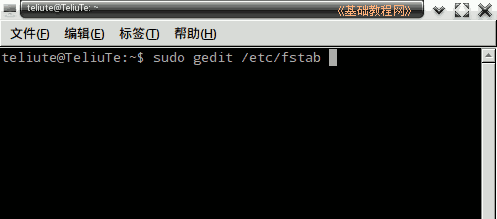
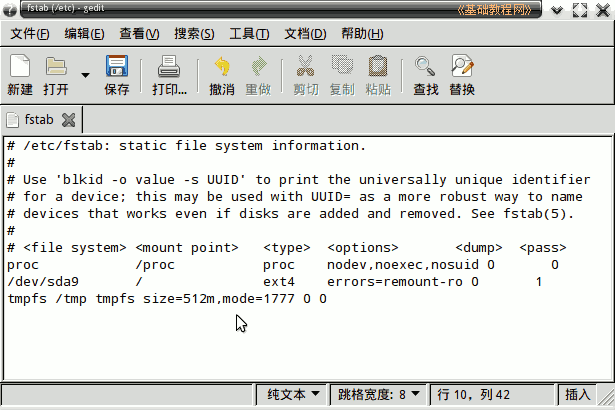
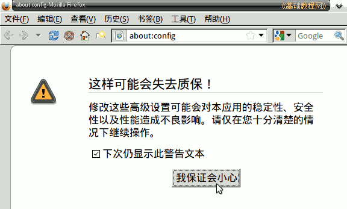
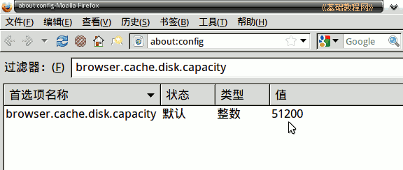
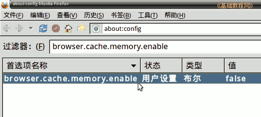
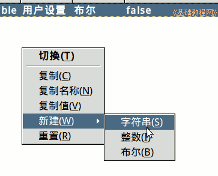
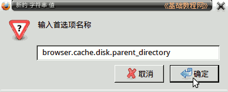
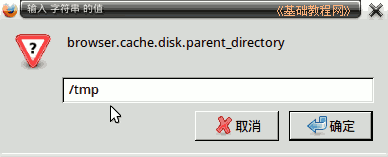

Firefox3 基础教程
作者：TeliuTe 来源：基础教程网
十二、用内存作缓存 返回目录 下一课把火狐的临时文件存放到内存中，从而加快浏览速度，也可以减少对硬盘的访问；
1、设置内存盘
1）挂载 /tmp 到内存中，在终端中运行命令：sudo gedit /etc/fstab；

注意细心操作，可以提前备份一下fstab文件；
2）在出来的文本编辑器窗口中，在最后添加一行，输入：tmpfs /tmp tmpfs size=512m,mode=1777 0 0
size 后面是内存盘大小，这个盘也要存放系统的临时文件，在刻录光碟时会提示缓存不足，可以先恢复原来的；

3）保存文件后退出，这样就将一部分内存当作磁盘来使用；
2、设置火狐
1）打开火狐，在地址栏输入 about:config 然后按回车键，确认后进入设置页面；

2）在过滤器中输入字符串：browser.cache.disk.capacity 这是用于火狐的缓存容量，单位是字节，默认是50M自己适当更改；

3）再在过滤器中输入：browser.cache.memory.enable 双击出来的项，使它后面的值为 false 关闭；

4）再在页面空白处点右键，选“新建－字符串(string) ”菜单；

5）在名称中输入 browser.cache.disk.parent_directory 点“确定”

接着在值中输入 /tmp

6）重启计算机，这时候系统临时文件和火狐的缓存就存放在内存中了，关机后自动消失；
如果要取消自己新建项，只要找到这一项，点右键选“重置”重启就可以删除或恢复这一项；
本节学习了设置火狐缓存到内存中的基本方法，如果你成功地完成了练习，请继续学习下一课内容；
本教程由86团学校TeliuTe制作|著作权所有
基础教程网：http://teliute.org/
美丽的校园……
转载和引用本站内容，请保留作者和本站链接。